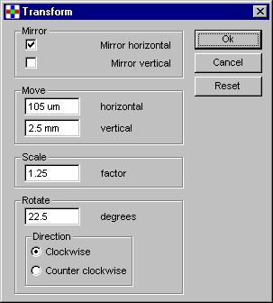

With the Operations menu the structures in the drawing can
be modified. Click on one of the commands in the figure below
for an explanation of it.
This will select all elements on the displayed structure, this includes references to other structures.
If the selected only" flag is on, the operations in this menu will only be performed on
the selected elements, else on all elements.
This will Un Select all elements on the displayed structure, this includes references to other structures.
If the selected only" flag is on, the operations in this menu will only be performed on
the selected elements, else on all elements.
The selected only menu-item is a flag that can be turned on or off.
When the flag is turned on, it menu-item is checked as can be seen in
the picture above.
This flag specifies wether or not each operation in the Operations
menu is performed on selected elements and referenced structures only. When the flag is
checked, but nothing is selected, the operations do not modify
the anything.
See selecting elements for info on how to select
elements.
A datafile can consist of several structures and structure-references. The structures contain elements.
The Delete operation deletes (selected if only selected is on) elements and references to structures.
In fact references to other structures are first exploded (made unique), and then the elements in it are deleted.
This may lead to empty structures.
A datafile can consist of several structures and structure-references.
The Flatten operation expands all references to structures and
move all structures to the top level, which results in only one structure,
which is the new top-structure.
Will be removed....
The transformation operation can modify structures in different ways.
Clicking the transform item in the menu will display the dialog below.
Specify the values for the transformation you want to perform. Values for
moving can be specified in pm, nm, um, mm, cm, dm, m (default), inch and
foot. Values for moving, scaling and rotating can be positive or negative.
Integers are not required. Clicking Ok will execute the transformation.
When Reset is clicked, all values are reset at their defaults. Mirroring in
both directions will be off, the move values will both be 0 (units), scaling
will be 1, rotating 0 and the direction will be "Clockwise".
When leaving the program, the values last used are saved to a settings
file. They will be loaded next time the program is started.
To transform only structures in a specific layer, use the transform operation
from the Operate (A) menu.

Undo last transformation can be used to restore the old situation. Undo can
be used only once, and must be used before any other menu-item is
selected. When an other item is selected, undo is disabled. This is done
because in meantime structures can be selected, deselected, deleted or even
a new file can be loaded.
This item is used for undoing the transformation performed in the same menu.
To undo a transformation on group A, use the undo operation from the
Operate (A) menu.